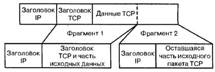
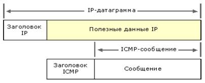

Безопасность. Лабораторная работа
Лабораторная работа № 3 Безопасность в глобальных сетях
Цель – познакомиться с существующими угрозами безопасности в сети Internet и их преодолением.
1. Протокол ICMP обеспечивает возможность управления протоком IP. Ещe одна полезная функция, которая реализуется посредством ICMP, - возможность проверять доступность сети при помощи команды ping, использующей для этого сообщения EchoRequest и EchoReply.
2. Redirect.Этот тип сообщения создавался, чтобы маршрутизаторы информировали друг друга о существовании оптимального маршрута к месту назначения
3. а) при помощи сообщения Redirectудаeтся перенаправить сетевой трафик вашей сети через один или несколько узлов, контролируемых нарушителем, облегчая тем самым выполнение различных злонамеренных действий. б) Посредством сообщения DestinationUnreachable маршрутизатор получает сведения о недостижимости назначения IP-пакета. Подделывая пакеты DestinationUnreachable, нарушитель может создать впечатление о недостижимости каких-либо важных узлов. в) Утилита ping позволяет не только диагностировать сеть, но и получать информацию о ней. Каждый добытый злоумышленником бит информации приближает его к цели – найти способ проникнуть в вашу сеть или нарушить еe работу.
4. Распределенные DOS-атаки.Организовать такую атаку достаточно сложно. Атакующий должен вначале проникнуть на другие – слабо защищенные – системы, чтобы создать ряд систем, которые называются управляющими и агентами. Сама атака на целевую систему выполняется агентами. Она контролируется управляющими системами. На вершине всей этой структуры находится компьютер атакующего. В программе Trin00 взаимодействие обеспечивается протоколом TCP/IP, а на компьютер жертвы направляется поток пакетов UDP. Новые инструменты устроены сложнее, при взаимодействии применяют шифрование и позволят атакующему выбирать тип атаки: UDP, SYN или ICMP flood либо их комбинацию.
Распределенная атака предоставляет агентам возможность перегружать канал связи целого узла.

Рис. 1. Один компьютер координирует атаки нескольких систем, сосредодоченых на одной цели
5.Фрагментация пакетов.При фрагментации сообщения заголовок ТСР помещается в первый фрагмент (рис. 2). Номер первого фрагмента равен 0. Если такие пакеты проходят межсетевой экран, фильтр в состоянии проверить информацию в заголовке ТСР (например, номер порта) только для первого фрагмента. Известный трюк, позволяющий пакету проникнуть через фильтр, состоит в том, что номер фрагмента просто устанавливается равным 1. Поскольку маршрутизатор считает, что это не первый фрагмент в последовательности, заголовок ТСР не проверяется и пакет не блокируется, даже если он нарушает правила безопасности.

Рис. 2. Заголовок ТСР включается только в первый фрагмент
6. Мониторинг сетевого трафика.Для перехвата сетевого трафика в локальной сети бывает достаточно подключить компьютер к сети и воспользоваться сетевым адаптером в promiscuousmode (режим перехвата всех кадров). В Internet пакет может быть перехвачен в любом сегменте, по которому он проходит. Единственный способ гарантировать надeжную защиту Internet-соединения – либо применить технологию шифрования, либо передавать пакеты обычных сетевых протоколов через закрытую частную сеть (VPN).
7. Протокол межсетевых управляющих сообщений ICMP(InternetControlMessageProtocol) является обязательным стандартом TCP/IP, описанным в документе RFC 792, «InternetControlMessageProtocol (ICMP)». Используя ICMP, узлы и маршрутизаторы, связывающиеся по протоколу IP, могут сообщать об ошибках и обмениваться ограниченной управляющей информацией и сведениями о состоянии.
8. ICMP-сообщения инкапсулируются и передаются в IP-датаграммах, как показано на следующем рисунке.

9. Политика безопасности – это список того, что разрешено и запрещено делать на подключeнном к сети компьютеру. В действительности хорошая политика охватывает множество различных тем и во всех деталях описывает разрешeнные пользователям действия и штрафы за нарушение требований.
10. Политикой сетевого подключения должны быть определены типы устройств, разрешeнные для подключения к сети. Например, позволяя подключение серверов и рабочих станций, вы можете запретить подключение к сети модемных серверов удалeнного доступа. Аналогично в политике к сети должны быть детально определены настройки систем, которые допускается подключать к сети. Политика подключения к сети должна также описывать функции, для выполнения которых предназначены определeнные компьютеры. Если в отделе может быть установлен Web- или FTP-сервер, полезно определить, в какой части сети его следует подключать.
11. Межсетевой экран использует набор правил, определяющих, какие пакеты (в случае фильтра) или сервисы (в случае proxy-сервера) будут работать через него. При этом выбирается одна из следующих двух стратегий:
- разрешить любой доступ, не запрещeнный правилами;
- запретить любой доступ, не запрещeнный правилами.
После выбора стратегии следует определить, каким сервисам будет разрешено работать через межсетевой экран и в каком направлении. Вы сумеете отобрать их на основе общей политики безопасности. Например, если вы захотите запретить загрузку программ из Internet, стоит заблокировать в межсетевом экране установку входящих соединений FTP. Аналогично можно ограничить работу с другими службами, такими как Telnet или HTTP.
Например, ваш список может состоять из таких правил:
- электронная почта может пересылаться в обоих направлениях, но должна проходить через защищeнный SMTP-сервер;
- запрещена работа любых служб, требующих установки прямого соединения между внутренним клиентом и внешним сервером. Все разрешeнные службы обязаны пользоваться proxy-сервером;
- запрещeн доступ по протоколу FTP в обоих направлениях;
Задачи:
1. Для чего можно использовать команду ping?
2. Для чего используется сообщение Redirect протокола ICMP?
3. Какие сообщения протокола ICMP злоумышленник может использовать для своих целей?
4. Каким образом организуются распределeнные DOS-атаки?
5. Как можно воспользоваться фрагментацией для проникновения пакета, нарушающего правила безопасности?
6. Как можно осуществить мониторинг сетевого трафика?
7. Опишите протокол ICMP.
8. Что из себя представляет IP-датаграммы?
9. Что из себя представляет политика безопасности?
10. Что из себя представляет политика сетевого подключения? 11. Что из себя представляет политика межсетевого экрана?